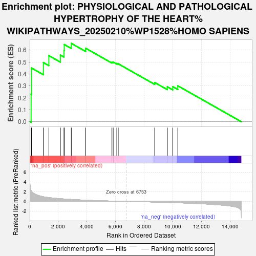

| | | Dataset | er_ranks |
| Phenotype | NoPhenotypeAvailable |
| Upregulated in class | na_pos |
| GeneSet | PHYSIOLOGICAL AND PATHOLOGICAL HYPERTROPHY OF THE HEART%WIKIPATHWAYS_20250210%WP1528%HOMO SAPIENS |
| Enrichment Score (ES) | 0.65567446 |
| Normalized Enrichment Score (NES) | 1.7921284 |
| Nominal p-value | 0.0056710774 |
| FDR q-value | 1.0 |
| FWER p-Value | 1.0 |
Table: GSEA Results Summary

Fig 1: Enrichment plot: PHYSIOLOGICAL AND PATHOLOGICAL HYPERTROPHY OF THE HEART%WIKIPATHWAYS_20250210%WP1528%HOMO SAPIENS
Profile of the Running ES Score & Positions of GeneSet Members on the Rank Ordered List
Fig 2: PHYSIOLOGICAL AND PATHOLOGICAL HYPERTROPHY OF THE HEART%WIKIPATHWAYS_20250210%WP1528%HOMO SAPIENS: Random ES distribution
Gene set null distribution of ES for PHYSIOLOGICAL AND PATHOLOGICAL HYPERTROPHY OF THE HEART%WIKIPATHWAYS_20250210%WP1528%HOMO SAPIENS